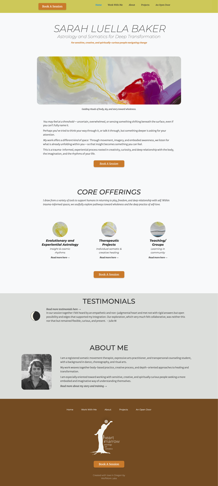
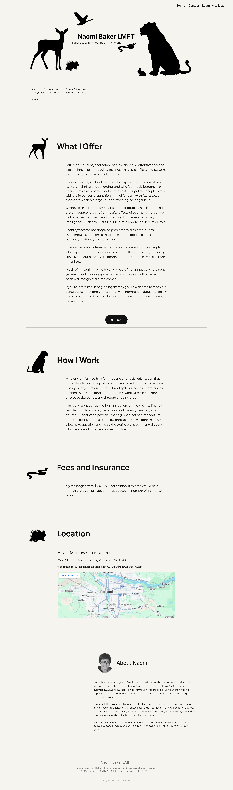
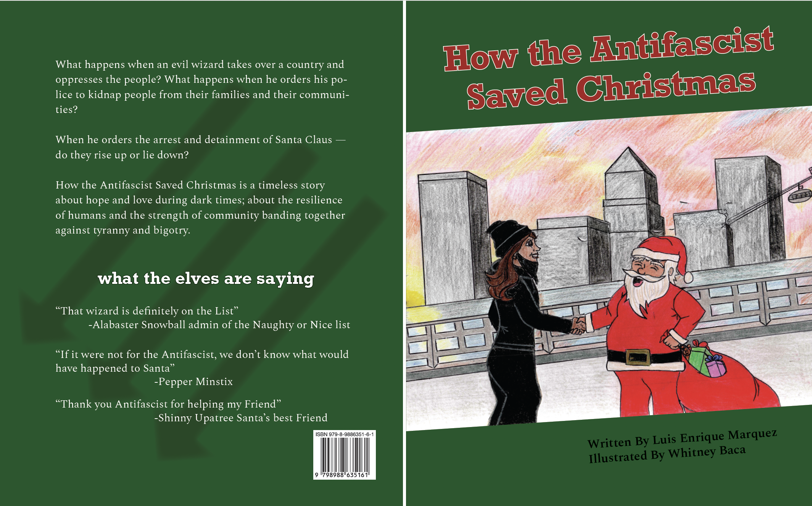

Projects
These are some projects, mostly websites, that I've worked on over the past year. If you'd like help with a website or another design project, I'd love to collaborate for trade (or some sort of donation-based fee). I'm so tired of Capitalism and the whole "ask for what you're worth" idea. I'm a worthy person and so are you — so let's respect each other and find ways to support each others' work.
Sarah Luella Baker

Sarah Luella Baker
Astrologer, Somatic Practitioner, and Ritualist
A custom Webflow site designed to reflect the calm clarity of Sarah Lu's work — combining minimal layout, soft pacing, and intuitive navigation. The structure supports her voice while offering space for future growth in offerings and writing.
Visit the site →Sofia Elias & Peacefull Living

Sofia Elias and Peacefull Living
Coaching for Individuals, Relationships, and Groups
A WordPress site built in Kadence to reflect the warmth and depth of Sofia Elias's relationship coaching practice — using her original voice throughout, with careful attention to her LGBTQIA+-affirming, soul-centered approach. The design balances peaceful imagery with clear, accessible navigation. Includes a fully audited and updated resources directory, an FAQ accordion, and a password-protected client portal with document download and upload functionality — structured so Sofia can maintain and grow it independently.
Visit the site →Susan Stout Baker

Susan Stout Baker
Independent Historian
A custom HTML/CSS site for an 81-year-old academic historian specializing in the Eastern Crisis of 1875–1878. The design centers on a single archival photograph of Mićo Ljubibratić — the subject of Baker's own published research — as a full-bleed hero image. A color palette extracted directly from a 19th century Serbian painting grounds the visual language in the historical period itself.
Built without a CMS, the site prioritizes scholarly dignity over self-promotion — letting the work lead and the person follow.
Visit the site →Naomi Baker

Naomi Baker
Depth-oriented psychotherapy
A custom WordPress site for a psychotherapy practice designed to support trust and invitation without urgency. Emphasis was placed on tone, spacing, and language that respect ethical requirements and the vulnerability of reaching out for care.
Visit the site →The Antifascist Who Saved Christmas

The Antifascist Who Saved Christmas
An illustrated children's book laid out in Adobe InDesign for Luis Enrique Marquez, with hand-drawn illustrations by Whitney Baca — designed to carry the political weight and warmth of the story without overwhelming either. Careful attention to the rhythm of illustration-facing-text spreads throughout, with typography and spacing chosen to honor both the writing and the art. Includes export and troubleshooting for both print-ready PDF (IngramSpark) and fixed-layout EPUB, resolving front-matter pagination errors, page-count compliance, and EPUB table-of-contents validation issues across multiple proof cycles.
Heart Marrow Counseling

Heart Marrow Counseling
A custom website built from scratch in VS Code for Heart Marrow Counseling, a depth-oriented healing space in Foster-Powell, Portland — co-created with Claude Code. The design reflects the practice's grounding in anti-racist, somatic, and transpersonal frameworks, with language and structure that hold space for multiple ways of knowing without flattening them into clinical neutrality. Includes a full services and community programming section, office space gallery, practitioner rates and access information, and a space rental section for clinicians — all organized to feel rooted and navigable without feeling corporate. SEO metadata written to reflect the actual language of the community the practice serves.
Visit the site →